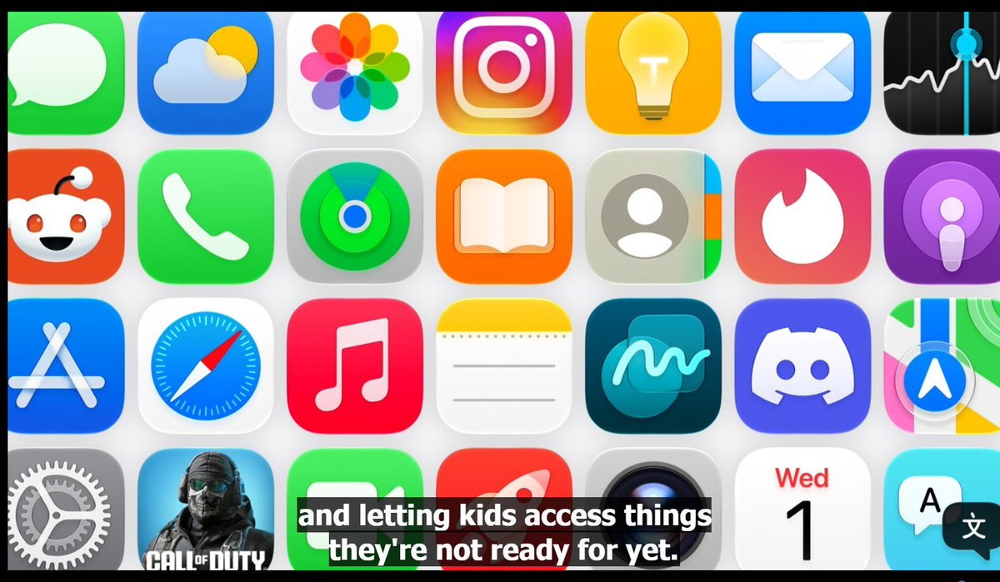

关于 iOS 27 上的 Apple 家长控制：法律框架下的无奈与全球性的平衡
看到时间线上有许多朋友在讨论 iOS 27 上新一轮的家长控制功能，那种本能的第一反应完全可以理解。
对于在大陆互联网环境里长大的人来说，“家长控制”这四个字往往伴随着一种天然的不适。它让人联想到的很少是温和的儿童保护，更多是手机被翻看、聊天记录被检查、游戏和社交被一刀切地禁止，以及一种以安全为名展开的日常管束。尤其在东亚家庭中，长辈与晚辈之间本就缺乏足够平等的沟通机制，当一个系统级功能将家长的权限做得愈发完整时，人们自然会担忧它是否会进一步放大既有的家庭权力结构。
然而，若将视线放回 Apple 所处的全球法律框架，这一设计早已超越了纯粹的产品偏好。
当前，各国对未成年人网络保护的合规要求正经历海啸般的激增。美国若干州已开始推动应用商店层面的年龄确认与家长同意机制；澳大利亚正立法要求特定社交媒体平台阻止 16 岁以下用户建立账号；新加坡也通过了应用分发服务的线上安全规则，强制主要应用商店提供家长控制、搜索限制以及面向儿童的安全说明。对于 Apple 而言，App Store 和 iOS 已经脱离了单纯的软件入口属性，在法律层面上，它越来越接近一个必须承担年龄识别、权限交接和风险提示责任的基础设施。
由此可见，Apple 面临的难题远非“如何给家长提供更多按钮”，而是如何在日益撕裂的本地法律之间，维持一个大体一致的全球系统体验。
⬇️

看到时间线上有许多朋友在讨论 iOS 27 上新一轮的家长控制功能，那种本能的第一反应完全可以理解。
对于在大陆互联网环境里长大的人来说，“家长控制”这四个字往往伴随着一种天然的不适。它让人联想到的很少是温和的儿童保护，更多是手机被翻看、聊天记录被检查、游戏和社交被一刀切地禁止，以及一种以安全为名展开的日常管束。尤其在东亚家庭中，长辈与晚辈之间本就缺乏足够平等的沟通机制，当一个系统级功能将家长的权限做得愈发完整时，人们自然会担忧它是否会进一步放大既有的家庭权力结构。
然而，若将视线放回 Apple 所处的全球法律框架，这一设计早已超越了纯粹的产品偏好。
当前，各国对未成年人网络保护的合规要求正经历海啸般的激增。美国若干州已开始推动应用商店层面的年龄确认与家长同意机制；澳大利亚正立法要求特定社交媒体平台阻止 16 岁以下用户建立账号；新加坡也通过了应用分发服务的线上安全规则，强制主要应用商店提供家长控制、搜索限制以及面向儿童的安全说明。对于 Apple 而言，App Store 和 iOS 已经脱离了单纯的软件入口属性，在法律层面上，它越来越接近一个必须承担年龄识别、权限交接和风险提示责任的基础设施。
由此可见，Apple 面临的难题远非“如何给家长提供更多按钮”，而是如何在日益撕裂的本地法律之间，维持一个大体一致的全球系统体验。
⬇️

关于 WWDC 的家长控制功能：
和一些推友不同，環状線是支持 Apple 推出此功能的。
未成年人，尤其是儿童，他们所接触到的内容，现在真的需要好好管管了。如果各位推友和一些低龄的墙内社媒用户接触过的话，或者像環状線一样家里有更小的儿童，看看他们现在已经被互联网塑造成了什么样子，環状線相信你 https://t.co/vfgfrUYQO2
和一些推友不同，環状線是支持 Apple 推出此功能的。
未成年人，尤其是儿童，他们所接触到的内容，现在真的需要好好管管了。如果各位推友和一些低龄的墙内社媒用户接触过的话，或者像環状線一样家里有更小的儿童，看看他们现在已经被互联网塑造成了什么样子，環状線相信你 https://t.co/vfgfrUYQO2